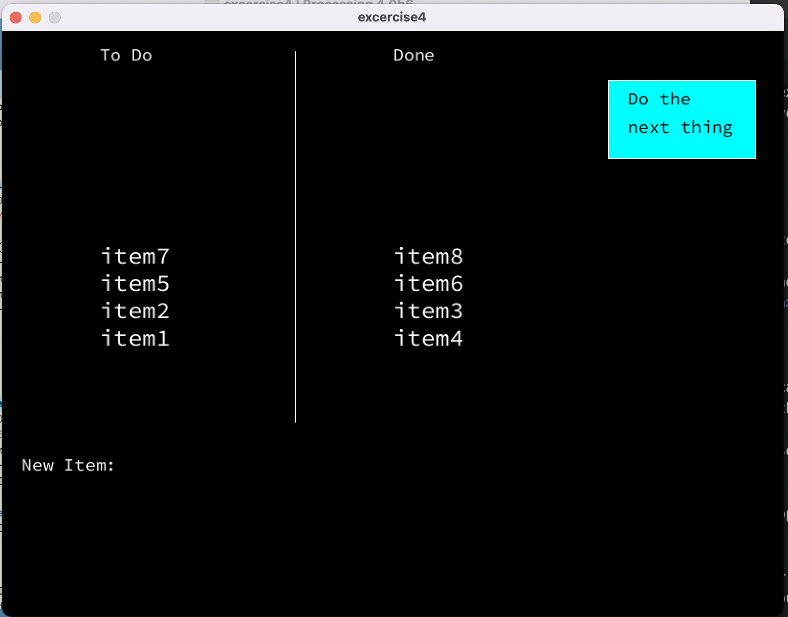

Preparation
- Download and install processing. Processing is a flexible software sketchbook and a language for learning how to code. It is used intensively throughout the creative industry, because it relatively easy to get things up and running, to create nice and appealing visuals and to add interactivity. Download version 3.5.*, because version 4 is only in beta at the moment. Be sure you have Processing up and running before the lab course, as we will assume that everything works as expected.
- Watch this video (4:44) in order to get an idea of the possibilities of processing. Also, study the works Oasis (Yunsil Heo), Replica (Alex Vessels and Jeff Howard), and Unnamed Soundsculture (Daniel Franke). These are relatively old works, but they are mentioned in the video.

- Go over the following tutorials. If you are completely new to programming, these will help you getting up to speed with basic methodologies and techniques. If you are already familiar with programming, these will help you getting to know the particularities of Processing.
Exercises
Exercise 1: Basic interaction
As explained, the basic flow of any processing sketch (as programs are called in processing-vernacular) is setup() once and draw() indefinitely. The first of these methods sets up the stage for your program (size, speed, color, ...) while in the seconds method you do everything that needs to be done while your program is running.
In the examples, the draw()-methods just followed the mouse, drawing lines or circles as it went over the screen. In this first set of exersises we're going to add some interactivity.
Make a new sketch and copy the following code in the editor (or download it here). Try to predict and explain what is going on before you run it (have a look at the API-reference if you are wondering about the particulars of the methods).
int CIRCLE_SIZE = 30;
void setup() {
size(600,600);
background(82,157,82);
}
void draw() {
background(82,157,82);
if (CIRCLE_SIZE > 600) {
CIRCLE_SIZE = 30;
}
strokeWeight(8);
stroke(70,200,70);
ellipse(300,300,CIRCLE_SIZE, CIRCLE_SIZE);
CIRCLE_SIZE = CIRCLE_SIZE + 10;
}Make use of the property mousePressed to stop the program-flow while the mouse is pressed. Note that there are several ways to do it, most of which are correct.
Remove your elaboration of the previous assignment. Also, remove the automatic growing of the green circle. Next, add code so that the size of the green circle is determined by the x-position of the mouse on the screen. Make use of the property mouseX, that always contains the current horizontal position of the mouse (top left being point (0,0)). Note that the maximum size of the green circle is the same as the size of the screen (yes, we did that on purpose).
Exercise 2: Basic coloring
Make a new sketch and copy the following code (or download it here), which creates a new window with four colored boxes on top of it. Study the code in order to get an idea of its workings.
int[] MOUSEPOS = new int[2];
void setup() {
size(800,600);
background(255);
fill(255,0,0);
rect(80,50,100,100);
fill(0,255,0);
rect(260,50,100,100);
fill(0,0,255);
rect(440,50,100,100);
fill(0,255,255);
rect(620,50,100,100);
}
void draw() {
//
}
void mouseClicked() {
MOUSEPOS[0] = mouseX;
MOUSEPOS[1] = mouseY;
println ("mouse position: (" + mouseX + "," + mouseY + ")");
}
Now update the code so that the background of the window is whatever color is clicked on (the color of one of the four squares). As has been explained, you cannot easily check whether a click was done on an object, so you'll have to use mouseX and mouseY in order to see what square (if one at all) the mouse was on when it was clicked.
Exercise 3: Keeping track with global variables
Open the example File → Basics → Control → EmbeddedIteration and study the code. When you run this sketch, you'll get a screen as the following:
As you see, there are no setup() and draw() methods in this example: all the code is just on the global scope. Move all this given code to the setup() method and add the methods mouseClicked() and draw(). Keep those two methods empty for the moment – during this exercise,we will give them some body. Save your sketch (examples are marked 'read only', so you cannot edit and save them).
When you look at the code, you can see that the location where all the white lines converge to is exactly the middle of the screen (have a look at line 20 of the original sketch). Create a global variable that contains these two values (so the type should be int[2]). Initialize this variable in setup() with the current middle of the screen and make use of this variable in the code. If you run this code again, there should not be any change in functionality.
Now fill the body of the mouseClicked() method, so that when a mouse is clicked, the coordinates of the clicked are stored in the global variabel that you just made.
Now give the method draw() its body. Instead of all the lines converging to the center of the screen, all the lines should go to whereever you have clicked the mouse.
Why does the variable that keeps the position of the mouse click to be declared in the global scope? Can you also change the code so that the drawing follows the mouse, instead of just updating after a mouse click? Do you still need the global variable for the position of the mouse in that case?
Exercise 4: Working with text and arrays (challenging)
Open the example Basics → Data → CharactersStrings and study the code and (especially) the comment on top of it. When you run this example, you can type some text that is added to the text that is already printed on the screen. Note that the character you are typing is also print on the console.
Now, we are going to make some sort of todo-list: a small program that allows us to enter a few (max ten) todo-items with a small button that removes the item on top of the list. Have look at the image below to get an idea of the workings of this program. We have already provided the basic design and setup for you: you can download here.

Implement the method keyTyped() so that whatever is typed is shown, starting at point (20, 500). Have a look at the previous example to see how you can do that. Whenever you hit the Enter-key, the item that has been typed should be added to the To Do items on the left and the line where you were typing should be emptied again. You should use key==ENTER || key==RETURN to check whether the enter-key was pressed.
Now, when you hit the button in the topleft corner, the To Do Item that is on top of the list should go to the Done list on the right. For this, you will need two global variables: one that keeps track of the number of To Do Items and one that keeps track of the Done Items. You don't have to worry about edge cases when either of these variables becomes less than 0 or greater than 9. You also don't have to worry about backspaces, cursor keys or delete keys.
Assignment
Create a sketch witch a screen of 600 × 600 pixels. Draw a line from the top-left to the bottom-right corner. Next, draw another lines that is a bit more steep than the first one, so that they cross in the middle. Repeat this process until the window is completely filled; have look at the image below to get an idea of the required end result.
Note that this perhaps seems easier than it is; you need to take into account that at some point you need to swap the axis of the value that remains constant and the axis of the value that changes.
Document your process using both text and screen shots and write a small piece of text explaining your code and your experience while writing it. Be sure to upload both the code and the document on your teams student folder before the next session. As you are working in pairs, upload the documents on both your student folders.